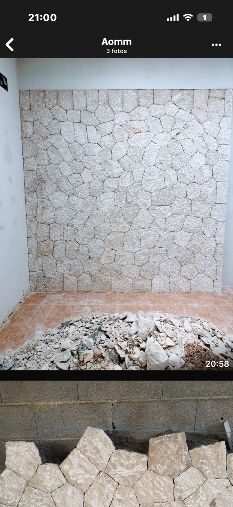
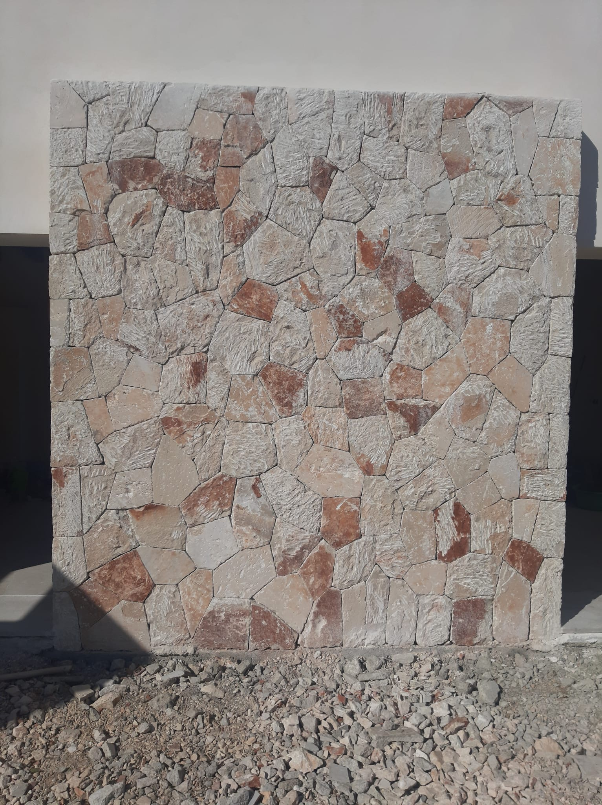
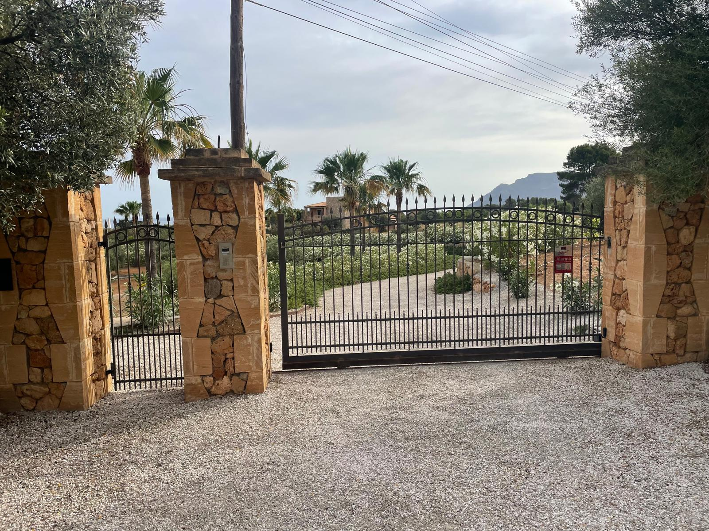

Piedra natural · Mallorca · Obra real
Piedra natural y mampostería.
Ejecución de muros, revestimientos y cerramientos con piedra natural, cuidando modulación, trabazón, juntas y encuentros.
← Volver a proyectos
Ejecución real
La piedra se coloca pieza a pieza, con criterio y oficio.
Seleccionamos tamaños, geometrías y tonos para conseguir una composición equilibrada, estable y coherente con la arquitectura mallorquina.




Construcción y reforma en Mallorca